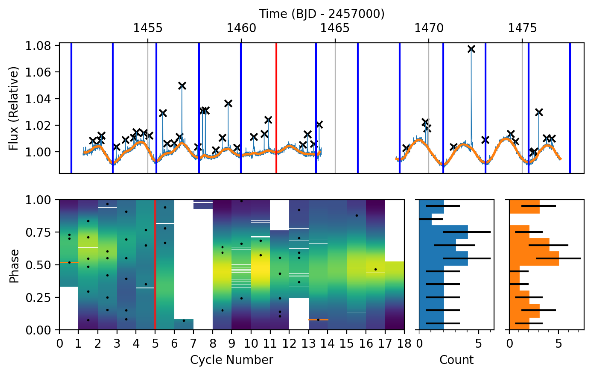
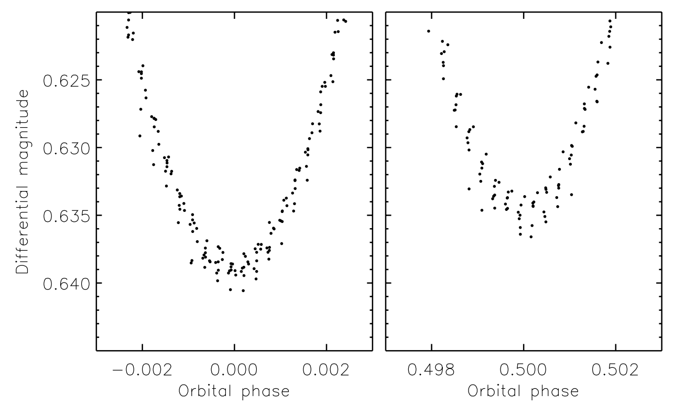

Welcome TESS followers to our latest news bulletin! This week, we are looking at three recent papers from the archive. Enjoy!
Observed Rate Variation in Superflaring G-type Stars (Crowley et al. 2022) :
Solar-like stars can produce flaring events four to five orders of magnitude more energetic than those observed from our Sun. Such ``superflares'' can have dramatic effects on the habitability of orbiting planets and it is currently unclear whether our parent star can produce them. Solar flares exhibit a wide range of variability timescales ranging from minutes to hours. Crowley et al. (2022) investigate 274 highly flaring G-type stars observed by TESS for superflares and test whether there are similar short-term variations in the superflare occurrence rate. The authors use the short-cadence data to analyze the lightcurve variability and identify 2703 superflares with energies ranging from 9x1032 erg to 8.5x35 erg. Crowley et al. (2022) found that seven stars in their sample exhibit variability in the corresponding superflare occurrence rate, and noted that there are similarities between the superflare statistics they measured and the Solar flare statistics. The authors argue that at the time of writing there are no reports of short-term variability in supeflare occurrence rates. Thanks to TESS, they were able to able to address this issue.
Rediscussion of eclipsing binaries. Paper XII. The F-type twin system ZZ Boötis (Southworth 2022) :
Eclipsing binary stars serve as calibrators for the fundamental stellar properties, and are ideal laboratories for testing the models of stellar evolution. Systems where the stellar masses and sizes can be measured to high precision are particularly important, especially if the two stars are similar in mass but differ in size. Southworth (2022) utilized TESS data to study in detail one such system, the known F3V ``twin'' binary ZZ Boötis, where the nearly-identical primary and secondary eclipse depths make distinguishing between the two highly challenging. TESS observed the target in Sectors 23 and 50 in short-cadence and detected multiple primary and secondary eclipses with distinct depth differences. The author combined TESS photometry, three sets of archival spectroscopic measurements, and Gaia data to obtain high-precision masses, sizes, effective temperatures and orbital parameters of the system. In addition, they obtained a spectrum from the Isaac Newton Telescope to examine magnetic activity and found no significant chromospheric emission. Southworth (2022) measured an orbital period of 4.992 days, primary star with M = 1.558+/-0.008 MSun, R = 2.063+/-0.006 RSun, and Teff = 6720+/-100 K, secondary star with M = 1.599+/-0.012 MSun, R = 2.205+/-0.006 RSun, and Teff = 6690+/-100 K, and a system age of 1.7 Gyr. TESS data enabled, for the first time to clearly distinguish which is the primary star and which is the secondary.
Exploring Short-Term Optical Variability of Blazars Using TESS (Pininti et al. 2022) :
Blazars are highly-variable, radio-loud active galactic nuclei where the relativistic jets are aligned with the light of sight. The variability is often erratic, usually covers timescales from minutes to decades, and is generally described by either intrinsic (e.g. shocks interacting with turbulent regions) or extrinsic models (e.g. geometrical effects) or a combination of the two. Optical studies of blazar light-curves provide better understanding of the mechanisms responsible for the observed variability, and are often conducted from ground-based facilities. This paper presents the detailed analysis of short-term optical variability in the TESS photometry of 29 blazars. Pininti et al. (2022) utilize a total of 79 short-cadence SAP light-curves (both 20-sec and 2-min cadence) to calculate the per-target, per-sector fractional variability and evaluate the corresponding power spectrum density. The level of variability in the target sample varies between a minimum of 0.8% (for 3C 273) to a maximum of 53.8% (for S4 0954+65), with an average of 13.44%. The authors argue that a normal probability distribution function represents the optical variability better than a lognormal distribution, with some sources exhibiting a bimodal normal distribution, and also note that the power spectrum density is consistent with a power-law model with a slope of 2.4. Capitalizing on TESS data, Pininti et al. (2022) performed one of the first systematic analysis of optical blazar variability on timescale of days to weeks.
 Fig. 1: Taken from Crowley et al. (2022). Upper panel: TESS short-cadence data for TIC 364588501. Light blue color represents the relative flux, orange represents the quiescent lightcurve, the x symbols represent the detected flares, and the blue vertical lines indicate periodicity. Lower panel: Phase map and distribution according to the detected periodicity. Blue histogram represents data before Cycle 5 and orange histogram represents data after Cycle 5.
 Fig. 2: Taken from Southworth (2022). Phase-folded TESS lightcurve for ZZ Boo for the primary (left) and secondary (right) eclipses, highlighting the clear depth differences.
Fig. 3: Taken from Pininti et. al. (2022). Short-cadence TESS lightcurves of blazars S4 0954+65 (upper panel), the target with the maximum detected variability, and 3C 371 (lower panel).